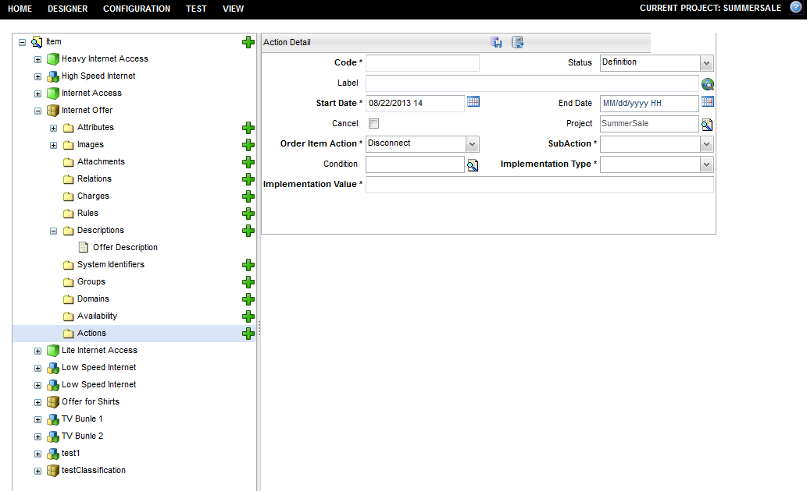
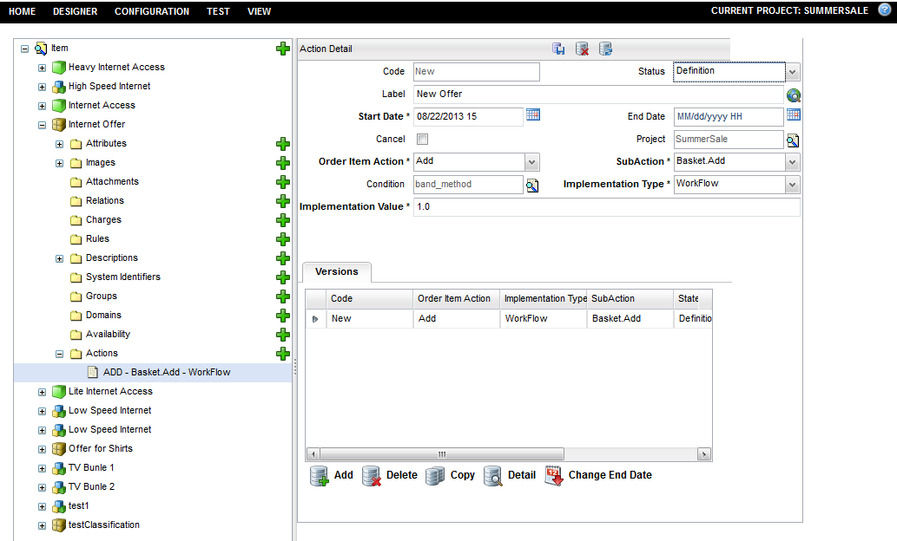

Item Actions
At order time, you can perform several operations for an item, for example, add, remove, upgrade,or downgrade. The items can have different behavior for different operations. The actions item object contains some rules or events. When you do add, remove, or other operations on the item, in each stage (add, present, submit), you can execute an action (event, workflow, rule) which is defined in catalog. Action in runtime is part of the item definition.
To create a new actions item, follow these steps:
Note: A project must be opened to create a actions item.
- Navigate to Designer > Items menu.
- Expand the Item tree and select one item to which you want to add the actions (for example, Internet Offer).
- Select Actions from associated item objects in the left pane.
- The Action Detail dialog appears in the right pane.
- Enter the information in the following fields:
- Click the Save (
 ) button.
) button. - The Versions tab appears on the Action Details dialog. You can create versions of this action object. Items with same type and state can have multiple actions, you can create two actions for new (action type) Basket.Add (sub action state) with different action code. Multiple versions are also allowed. For same action code, you can create multiple versions in runtime. Item cache picks up only one version for each code.
- The saved item action (ADD - Basket.Add - Workflow) appears under the Actions object.

| Field | Description |
|---|---|
| Code | This is the code used to identify the item action. This code is not restricted to alphanumeric characters, it can also contain a combination of spaces, hyphens, etc. Strings can be up to 32 characters long. |
| Status | A list of available Status for this action (for example, Definition and Active). |
| Label | The label for the item action, which is used in the application user interface. This field is a translational string that supports language translations (refer to Velocity Studio's Translation Element for more details). |
| Start Date | The effective date of this action. Refer to Start and End dates for details. Defaults to the project's start date. |
| End Date | The end date of this action represents the date when this action is no longer effective. Refer to Start and End dates for details. |
| Cancel | Objects that are extended have this Cancel flag checked. If the flag is checked, then the extended item does not inherit that association. |
| Project | Each object is assigned to a Project. This defaults to the active or opened project when the action is first created. |
| Order Item Action | This field refers to the type of operation when you need do some operation on items, such as add, change, and remove. Predefined action type list contains Add, Change, Upgrade, Downgrade, Move, and Disconnect in the cwt_orderItemAction code table. You can add customized operation types in this code table. |
| SubAction | This property defines the state of the action. For example, to create new operation there might be several states add, present, submit, or complete. State list is listed in the cwt_itemSubAction code table. You can add customized subactions in this code table. |
| Condition | This field indicates the eligibility rule which is from catalog global rule to determine whether this action is eligible to execute. In the runtime, you can call isEligible() to execute eligibility rule. |
| Implementation Type | This property defines action value type. It determines if the action is executed as workflow, event, catalog rule, or other type. The type list is from cwt_implementationType code table. There are 4 predefined types workflow, event, eligibility, and validation. You can add customize types in the code table. |
| Implementation Value | This field is depended on the Implementation type. For workflow, the value is metadata name, event type or some user defined type. User Interface displays a text field for user to input the name. For eligibility, validation, the value is global Rule. User interface displays a finder to select global rule. |
